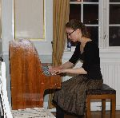
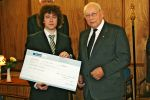

Kokkeelev Lena Staun fra Gilleleje modtog onsdag et legat fra Odd Fellow broderloge nr. 55 PAX i Hillerød.
Legatet uddeles til humanitære og uddannelsesmæssige formål og blev overrakt i forbindelse med et logemøde
i Odd Fellow Palæ på Milnersvej.
Lena Staun uddanner sig som kok på Hotel- og Restaurantskolen i Valby, som samarbejder med en række restauranter
også i udlandet. Sommersæsonen 2015 tilbragte Lena på Il San Pietro di Positano, et 5 stjernet hotel ved Napoli,
hvor skolen har haft kokkeelever de sidste 5-6 år.
Hotellets restaurant, som besidder en Michelin stjerne, ledes af Alois Vanlangenaeker, en hård belgisk køkkenchef,
som i sin tilbagemelding til Hotel- og Restaurantskolen, efter at Lena var rejst hjem, skrev: "Best student ever.
Send me more".
Lena har arbejdet på restauranter i Canada og Australien og på restaurant Amass på Refshaleøen.
Hun er netop kommet hjem fra Frankrig, hvor hun siden den 18 december 2015 har arbejdet på en restaurant i Val
Thorens, og tager nu igen til Il San Pietro di Positano for at gennemføre endnu et praktikophold.
Formanden for logens Humanitære Legat, Ib Pörtner, fremhævede Lenas store energi og villighed til at yde personlige
ofre for at dygtiggøre sig. Hendes kommende praktikophold bliver meget krævende med en arbejdsdag på 12 timer og kun
en ugentlig fridag.
Disse praktikophold er i princippet ulønnede, dog således at eleven modtager kost og logi og meget begrænsede lommepenge.
Det levner ikke plads til at anskaffe eget udstyr, knive osv. og her kan legatet blive en god hjælp.
Lena fremhævede selv værdien af at samle erfaringer fra ophold på forskellige restauranter for derigennem at se hvad der
virker og hvordan arbejdet gribes an. Hendes store passion er desserter og hendes mål er at dygtiggøre sig særligt på
dette felt.
Logens overmester, Henrik Taggatz-Paulsen, ønskede på Odd Fellow logens vegne tillykke med legatet og ønskede Lena held
med sin videre uddannelse.
Onsdag den 13. maj 2015 uddelte Odd Fellow Logen PAX i Hillerød logens Humanitære Legat for 2015 til organisationen VENTILEN (Ven-Til-En),
som holder til på Buevej i Hillerød. Overrækkelsen fandt sted ved en højtidelighed i Odd Fellow Palæ på Milnersvej under overværelse af
logens brødre, ledsagere og inviterede gæster.
VENTILEN Hillerød er en del af den nystartede Folkebevægelsen Mod Ensomhed, der har som mål at halvere antallet af ensomme unge i Danmark
inden 2020. Det kan være svært at indrømme, at man er ensom og har brug for en hjælpende hånd, men det er man ikke alene om. Ifølge
statistikkerne sidder der 1-2 i hver klasse på de danske skoler og føler sig ensom, og det er en følelse, som alle mærker af og til.
Formanden for PAX-logens Humanitære Legat, Ib Pörtner, henviste i sin begrundelse for tildelingen af årets Legat til at netop bekæmpelse af
ensomhed er højaktuelt, ikke mindst via megen omtale i de landsdækkende medier. Ensomme unge trænger til en hjælpende hånd og et fællesskab
for at finde sig selv og det er præcis hvad VENTILEN tilbyder, og som de frivillige unge, der deltager i arbejdet, kan bidrage med.
Maia Løvig Jensen og Marie Birkedal modtog på vegne af VENTILEN Legatet på 10.000 kr. og talte om deres arbejde som frivillige og om de
aktiviteter der finder sted omkring ensomme unge i Hillerød.
Målgruppen er unge i alderen 15-25 år som kan komme i VENTILEN efter en samtale og derefter deltage i møderne hver onsdag og i de mange
forskellige aktiviteter som gennemføres.
De indgår på den måde i et fællesskab som for mange bliver udbygget når de unge igennem samværet
med ligestillede får styrket deres selvtillid. Det kan bane vejen for deltagelse i andre fællesskaber f.eks. i skolen og andre fritidstilbud.
Et eksempel på en særlig succeshistorie var den unge mand, som undskyldte at han desværre ikke længere havde tid til at komme i VENTILEN fordi
han havde så mange aftaler udenfor.
Ved det efterfølgende selskabelige samvær svarede Maia Løvig og Maria Birkedal beredvilligt på mange spørgsmål om deres opgaver og gav udtryk
for deres glæde ved at deltage i arbejdet i VENTILEN.
Onsdag den 14. maj 2014 tildeltes Odd Fellow Logens Humanitære Legat til chellisten Josefine Opsahl.
Josefine har studeret på Det Kongelige Danske Musikkonservatorium hos Prof. Morten Zeuthen og hos Toke Møldrup, som er koncertmester i Sjællands
Symfoniorkester (Copenhagen Phil). I 2012 modtog hun 1. pris ved musikkonservatoriets legatkonkurrence for cellister.
Foruden at udfolde sig som solist med et bredt repertoire af cellokoncerter og soloværker, er hun også kammermusiker og performer, der udforsker grænselandet
for den klassiske genre, heriblandt i improvisations- og lydkollektivet ‘We like We’, samt det progressive folkemusikensemble ‘Kottos’.
Til daglig spiller Josefine Opsahl i klaverkvartetten ‘Paian’ der har speciale i nyskrevet dansk musik, samt den dansk/svenske strygekvartet ‘Øresundskvartetten’
der modtager undervisning på Det Kgl. Danske Musikkonservatorium ved prof. Tim Frederiksen.
Overrækkelsen fandt sted i logens smukke mødesal på Milnersvej i Hillerød og Legatets formand William Anderson begrundede tildelingen bl.a. med henvisning til Josefines
store flid og engagement i sine studier og ikke mindst meget rosende udtalelser fra prorektor Tim Frederiksen ved Det kongelige Danske Musikkonservatorium.
På aftenen spillede Josefine musik af Bach, Thomas Koppel og Astor Piazzolla for logens brødre og inviterede gæster. Hun blev akkompagneret af sin kæreste Bjarke Mogensen på accordeon.
Josefine fortalte om sin udvikling som musiker og de valg der igennem årene har ført hende frem til celloen som instrument. Celloen ses i mange sammenhænge, men for
Josefine er det særligt inspirerende at kunne udøve sin musik under intime former, netop som ved aftenens arrangement. Legatet kan muliggøre Josefines tanker om et
studieophold i Chicago.
Lørdag den 23.februar 2013 markerede loge 55 PAX sin 90 års stiftelsesdag og logens Humanitære Legat
benyttede anledningen til at foretage sin årlige uddeling. Modtageren var Ungdomspsykiatrisk Dag- og
Døgnafsnit ved Hillerød Hospital og legatet blev overrakt til institutionens leder overlæge Karsten Køhler.
I motiveringen for donationen sagde formanden for Det Humanitære Legat, William Anderson bl.a.:
”Psykiske lidelser bekymrer os alle men er svære at tale om. Vi har ofte nemmere ved at tale om fysiske
sygdomme. Jeg føler, at vi alle har pligt til at nedbryde disse tabuer om psykiske sygdomme og tale om
dette på samme naturlige måde, som ved fysisk sygdom.
Legatet gives med henblik på at støtte det store arbejde som du og dine kolleger udfører for at hjælpe
unge mennesker med psykiske sygdomme. Vi har ikke sat formål på legatets anvendelse. et er op til dig
og dine kolleger, at bestemme formålet til gavn for patienter på dag- og døgnafsnittet på
Ungdomspsykiatrisk Hospital i Hillerød.”
Overlæge Carsten Køhler takkede for legatet og gav en redegørelse for det arbejde der udføres på Ungdomspsykiatrisk Dag- og Døgnafsnit. Her undersøger og behandler man unge i aldersgruppen 14-17 år med psykiske lidelser der har et sådant omfang, at de kræver indlæggelse. Der er plads til 11 døgnpatienter og 3 dagpatienter på afsnittet. Der er efterfølgende modtaget en orientering om, at legatet er anvendt til indkøb af et up-to-date TV med tilhørende spillekonsol, hvortil der også kan kobles PC’er. Flere af de spil der er til rådighed fordrer fysisk aktivitet, hvilket er særdeles godt for de unge patienter og udstyret kan i høj grad anvendes i undervisningsøjemed, såkaldt psyko-edukation.
Onsdag den 9. maj 2012 i forbindelse med logens forårsmøde med ledsagere foretog Pax Logens Humanitære legat sin fjerde uddeling på kr. 15.000,00
Donationen tilfaldt den 24-årige studerende ved Det Kongelige Danske Musikkonservatorium Anne Sofie Sloth Nilausen, der har klaver/klassisk musik
som hovedfag.
Af Musikkonservatoriets anbefaling fremgår det, at Anne Sofie Sloth Nilausen ikke kun er i besiddelse af nogle ekseptionelle
pianistiske evner, hun er derudover begavet med en udsøgt klang- og formsans samt gode lyttende ører. Desuden er hun
ambitiøs og perfektionist helt ud til fingerspidserne. Det vigtigste er imidlertid hendes musikalske personlighed –
denne helt specielle blanding af noget på en gang meget sårbart og meget stærkt, som giver hendes spil en helt egen intens
autoritet.
|  |
Legatet gives med henblik på videre studier i såvel ind- som udland eller til indkøb af studiemateriale.
Under det selskabelige samvær fortalte Anne Sofie om sine fremtidsplaner, glæden ved musik og hvorfor hun valgte
klaver/klassisk musik.
Herefter fulgte to musikalske indslag nemlig:
Første sats af Beethovens Waldstein-sonate nr. 21 og Chopins f-mol fantasi
Alle var begejstrede over Anne Sofies musikalske personlighed og der var stående bifald efter begge musikstykker.
I fortsættelse af logens møde onsdag den 30. marts 2011 foretog Pax logens humanitære legat sin tredje uddeling.
Donationen tilfaldt fritids- og ungdomsklubben LEVUK - Landsforeningen Evnesvages Vel ungdomsklub - og var på 10.000,- kroner. Klubben var repræsenteret ved bestyrelsens formand René Silword og klubbens leder Benjamin Goings.
Begrundelsen for tildeling af legatet var blandt andet, at arbejdet i LEVUK bygger på relationer mellem mennesker som et middel til at skabe trivsel og udvikling for den enkelte ud fra den enkeltes behov og muligheder.
Klubbens pædagogiske linje, der tager udgangspunkt i de menneskelige relationer og klubbens mål om at udvikle den enkeltes potentiale i trygge rammer og i en sund livsstil og med respekt for den enkeltes identitet, er nøje sammenfaldende med Odd Fellow Ordenens værdier og menneskesyn.
Tildelingen af legatet skal således ikke alene ses som en økonomisk håndsrækning til klubben, men i lige så høj grad som en anerkendelse af det væsentlige og menneskelige arbejde, der udføres i klubben af dens ledere og medarbejdere.
Onsdag den 5. maj 2010 i forbindelse med logens forårsmøde med ledsagere foretog Pax Logens Humanitære legat sin anden uddeling på kr. 10.000,00
Donationen tilfaldt den 23-årige studerende ved Det Kongelige Danske Musikkonservatorium Tanja Fanth Andersen, der har trompet som hovedfag.
Af Musikkonservatoriets anbefaling fremgår det, at Tanja Fanth Andersen er en både talentfuld og flittig studerende elev, der målrettet har arbejdet på at udvikle sig både teknisk og musikalsk.
Legatet gives med henblik på videre studier eller til hjælp til indkøb af instrumenter eller studiemateriale.
Under det selskabelige samvær fortalte Tanja om trompetens udvikling fra signalhorn til orkesterinstrument samt instrumentets placering i orkestret. Herefter fulgte to musikalske indslag nemlig:
De to første satser af Thorvald Hansens sonate for trompet og klaver fremført af Tanja og hendes pianist Vagn Sørensen
og
”De to trompeter” fremført ligeledes af Tanja suppleret af solotrompetist Gorm Horvaldt ledsaget af pianisten Vagn Sørensen.
Som gæster deltog Tanja Fanth Andersens ægtefælle Søren Møller Larsen og hendes lærer musikprofessor Mogens Andresen.
Onsdag den 15. april 2009 foretog Pax logens humanitære legat sin første uddeling. Donationen var på kr. 10.000,00 kr.
Efter indhentet udtalelse fra Det Kongelige Danske Musikkonservatorium tilfaldt donationen en ung studerende Emil Folke Andersen på 19 år, der har waldhorn som hovedfag. Emil Folke Andersen begyndte sine studier ved musikkonservatoriet i en meget ung alder. Forinden havde han markeret sig positivt blandt andet ved at vinde i den prestigefulde ”Øresundskonkurrence” for unge musikere.
På konservatoriet havde han et helt år før sin påbegyndte uddannelse været fast medlem i Det Kgl. Danske Musikkonservatoriums Brass-band, på lige fod med de på det tidspunkt ”rigtige” studerende. I sit 1. studieår bestred Emil Folke videre solopladsen i konservatoriets orkester, noget der yderst sjældent sker for en 1. års studerende.
Emil Folke Andersen har hele sit liv boet i Gilleleje, indtil han kort forinden donationsoverrækkelsen af hensyn til afstanden til konservatoriet flyttede til Kgs. Lyngby.
Overrækkelsen fandt sted i logesalen efter logens afslutning og blev overværet af Emil Folke Andersens forældre og hans pianist Linda Christiansen
.
|  |